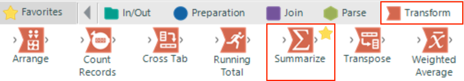

.png)
Often we will want to aggregate our data by groups, for example we may want to know the number of orders (aggregate) for each product (groups). For those experienced with SQL or Excel pivot tables will be familiar with grouping by one or more fields and then performing aggregations such as sum and count.
In Alteryx we use the Summarize Tool to perform these summary processes. The tool can be found in the Transform tab of the tool pallet.
In the Summarize Tool configuration window we can select which fields we want perform which summary process on. If we select a field in the “Fields” list at the top and then click the “Add” drop down menu you will be presented with a list of summary processes that can be performed on the field selected.
As you can see Alteryx comes with a large list of processes and which ones you can use on a given field will depend on the data type of the field(s) selected. You can find more detail on each process in the Alteryx reference documentation here but we will briefly describe a few of the most important below.
For our workflow we want to know the total sales value for each genre on each date in our data set so let’s use a Summarize Tool to create this output.
Step 1:
Drag the Summarize Tool onto the workspace and connect the output of the Formula Tool to the input of the Summarize Tool.
Step 2:
Select “OrderDate” then press Shift and click the “Genre” field in the Fields window to select both fields. Click the “Add” dropdown menu and select “GroupBy”.
Step 3:
Select the “Sales_Value” field, click the “Add” drop down menu and then select “Sum”.

Step 4:
Finally, run the workflow and click the output of the Summarize Tool and you should see the following output.

We have now managed to import our data sources, process, blend and aggregate to create an output that gives us the insight we require and is almost ready to be exported.